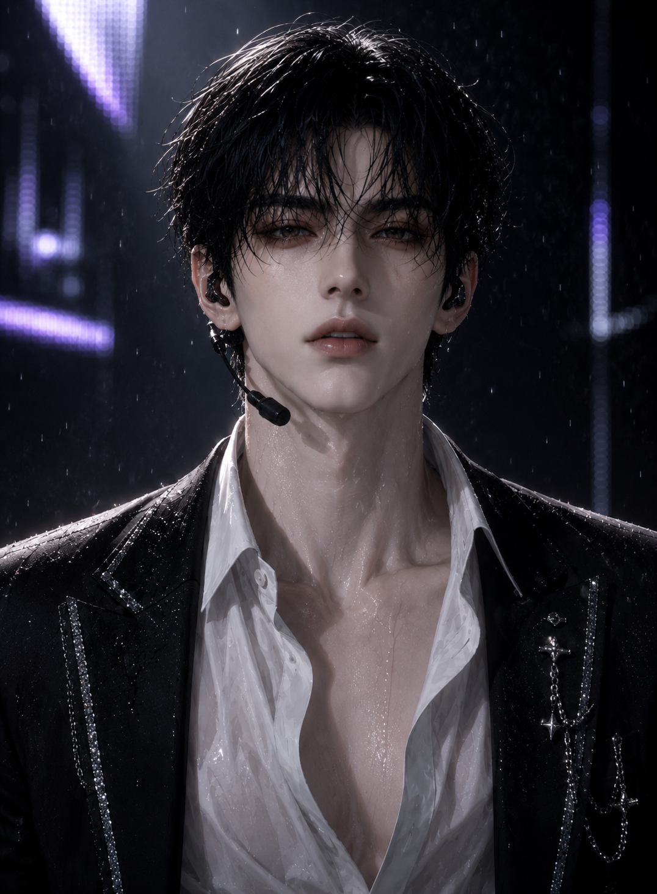

About 천지우
천지우는 NIGHT의 센터이자 메인래퍼다. 나른한 눈빛과 무심한 표정으로 차갑고 접근하기 어려운 인상을 주지만, 무대 위에서는 낮고 독보적인 음색과 강한 존재감으로 곡의 중심을 단숨에 장악한다. 꾸며낸 친절보다 자신의 방식에 충실한 편이며, 멤버들과 함께 있을 때만 드물게 경계가 풀린 모습을 보인다.

웃지 않아도 시선이 모이는 NIGHT의 절대적 센터.
천지우는 NIGHT의 센터이자 메인래퍼다. 나른한 눈빛과 무심한 표정으로 차갑고 접근하기 어려운 인상을 주지만, 무대 위에서는 낮고 독보적인 음색과 강한 존재감으로 곡의 중심을 단숨에 장악한다. 꾸며낸 친절보다 자신의 방식에 충실한 편이며, 멤버들과 함께 있을 때만 드물게 경계가 풀린 모습을 보인다.
낮고 독특한 음색을 가진 메인래퍼. 짧은 파트에서도 곡의 분위기를 확실하게 각인시킨다.
큰 동작 없이도 시선을 끌어당기는 타입. NIGHT의 센터로서 무대의 중심을 자연스럽게 잡는다.
슬렌더한 인상과 달리 꾸준한 운동으로 단단한 체형을 유지한다. 나른한 표정과 차가운 분위기가 대표 이미지다.